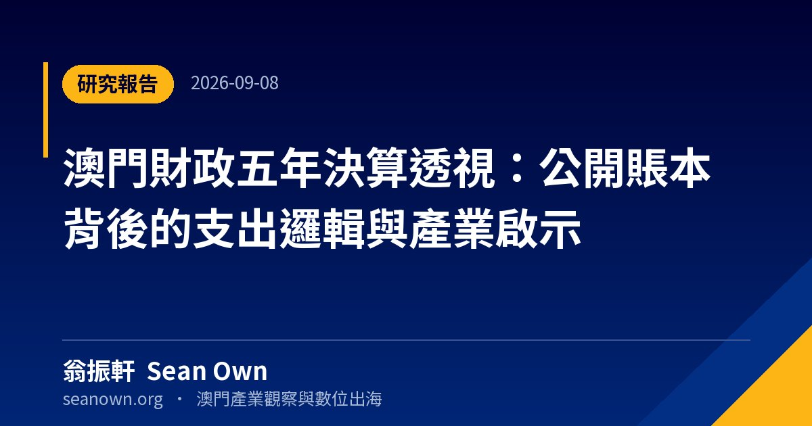
澳門財政五年決算透視：公開賬本背後的支出邏輯與產業啟示
澳門特區政府 2020–2024 年一般綜合預算決算近日完整公開，涵蓋九大功能分類、四十五條明細紀錄的「公開賬本」，不僅是一…
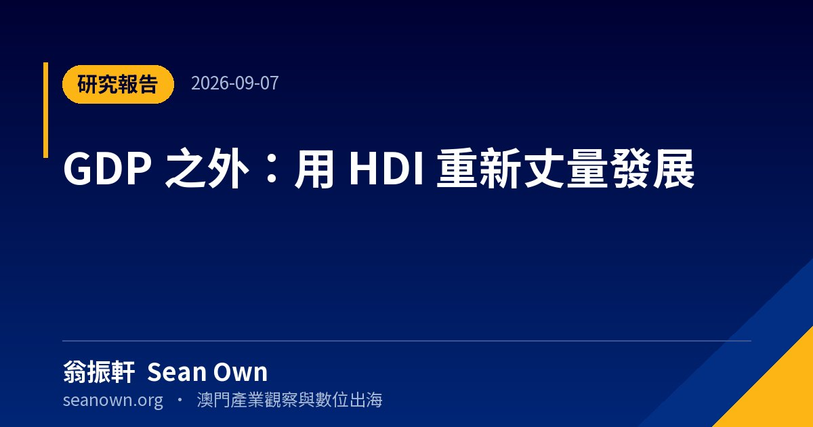
📊 GDP 之外：用 HDI 重新丈量發展
我們太習慣用一個數字丈量成敗——GDP。城市比總量，國家比增速，好像數字足夠大，一切問題就足夠小。但聯合國開發計劃署（UND…
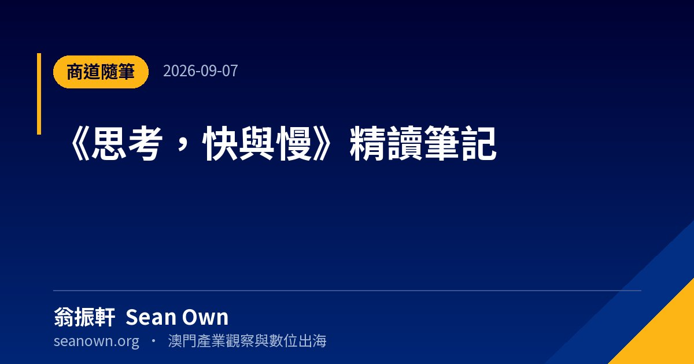
《思考，快與慢》精讀筆記
丹尼爾·卡尼曼（Daniel Kahneman, 1934–2024）——諾貝爾經濟學獎得主的代表作，行為經濟學奠基之作。一…
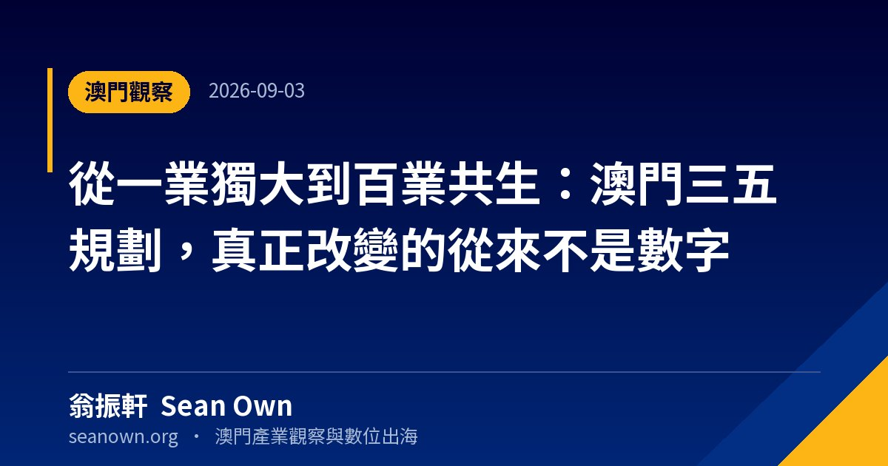
從一業獨大到百業共生：澳門三五規劃，真正改變的從來不是數字
中國人做事，向來習慣立下一個五年之約。自 1953 年第一個五年計劃啟動，這套以五年為時間維度的治理邏輯，我們已經踏實走過七…
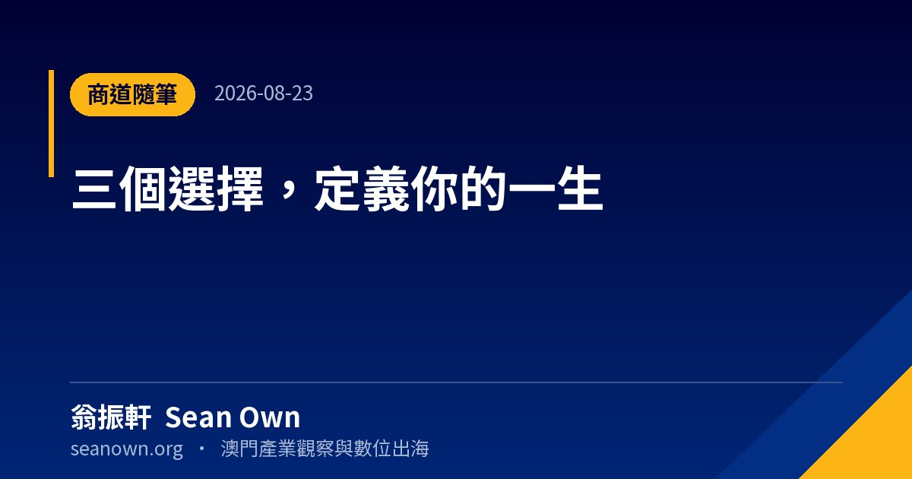
三個選擇，定義你的一生
三個選擇，定義你的一生年輕人做對3個決定，足以拉開人生差距矽谷納瓦爾：住哪裡、做什麼、跟誰在一起，這三個決定，幾乎直接定義你…
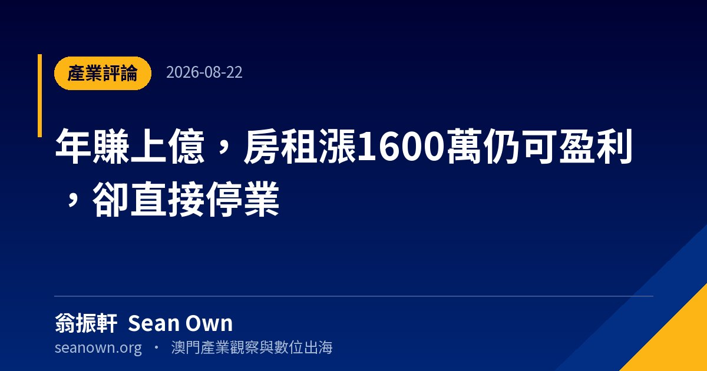
年賺上億，房租漲1600萬仍可盈利，卻直接停業
年賺上億，房租漲1600萬仍可盈利，卻直接停業（胖東來金句）當年新鄉大胖店，是于東來團隊一步步把冷清的商圈做旺，門店每年有上…
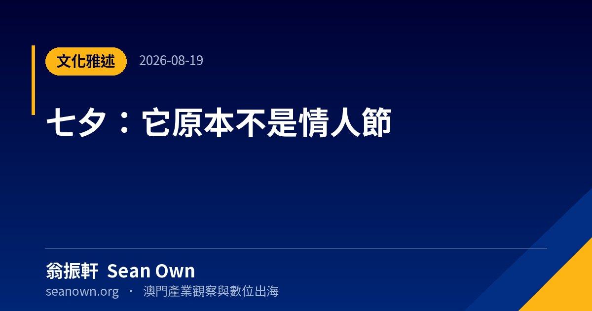
七夕：它原本不是情人節✨
很多人把七夕當作中國情人節，其實根源是上古星宿崇拜。真實天文：銀河兩側，牛郎星與織女星，實際相距16光年，宇宙之中永遠無法相…
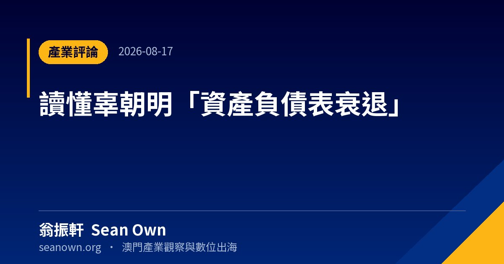
讀懂辜朝明「資產負債表衰退」📊
讀懂辜朝明「資產負債表衰退」📊為什麼降息、印錢，有時候救不了經濟？🔹核心3個邏輯1️⃣泡沫破裂之後：股價房價資產大幅下跌，但…

⌚出發就是答案
⌚出發就是答案世界是最大的娛樂場✨多來幾場說走就走的出行。趁還能走、還能看，多奔赴四方。翻山越嶺，走得越遠，便感覺世界越遼闊…
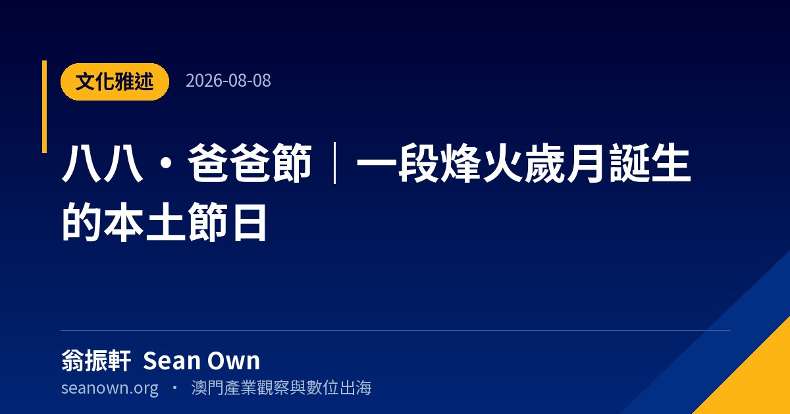
八八·爸爸節｜一段烽火歲月誕生的本土節日
八八·爸爸節｜一段烽火歲月誕生的本土節日1945抗戰末年，上海還在佔領之下，滿城飽經戰亂。梅蘭芳、顏惠慶等十位上海社會名流，…
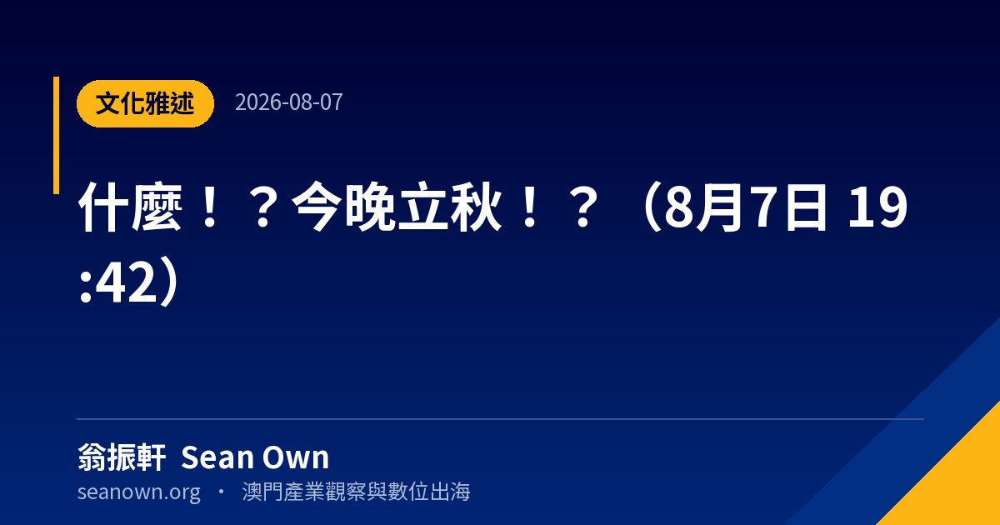
什麼！？今晚立秋！？（8月7日 19:42）
什麼！？今晚立秋！？（8月7日 19:42）我還正準備感受盛夏，立秋就悄悄來了，暑氣依舊熾熱，秋意卻已登場。📜小故事一｜一葉…
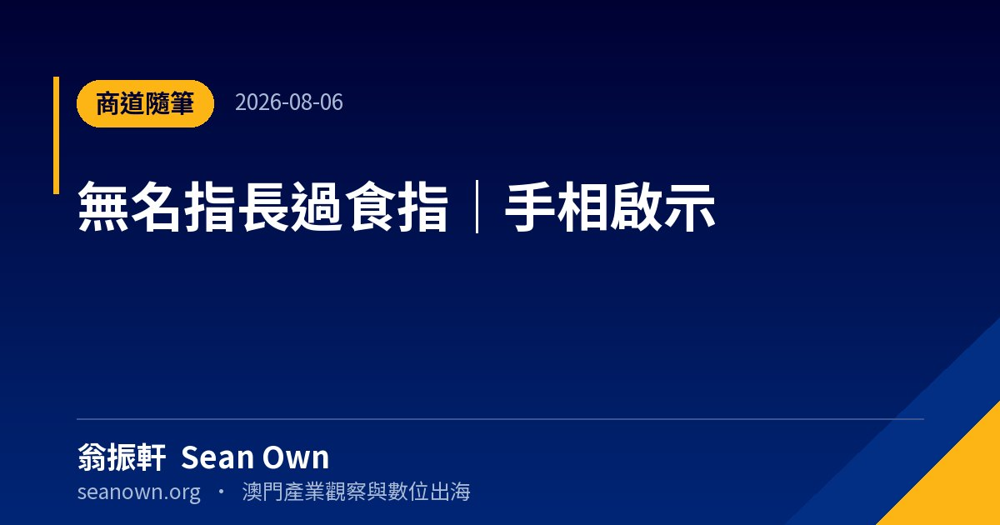
無名指長過食指｜手相啟示
無名指長過食指｜手相啟示民間手相說法：男看左手，女看右手，若是無名指長過食指，一生會遇上三段重要因緣。貴人緣、感情緣、使命緣…
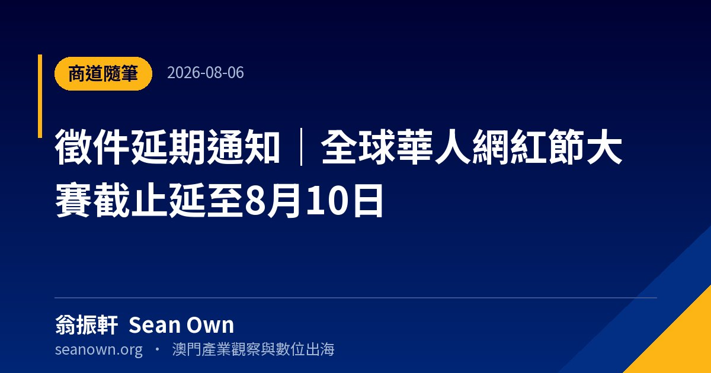
🔥徵件延期通知｜全球華人網紅節大賽截止延至8月10日
🔥徵件延期通知｜澳門孫中山網紅節大賽截止延至8月10日紀念孫中山誕辰160週年，面向全球華人青年開放報名，素人、網紅均可參加…

付航：一位父親最高級的智慧
付航：一位父親最高級的智慧看付航拿下《喜劇之王》總冠軍，最打動我的不只是舞台上的表演，而是他父親的兩句通透智慧的話。高考只考…
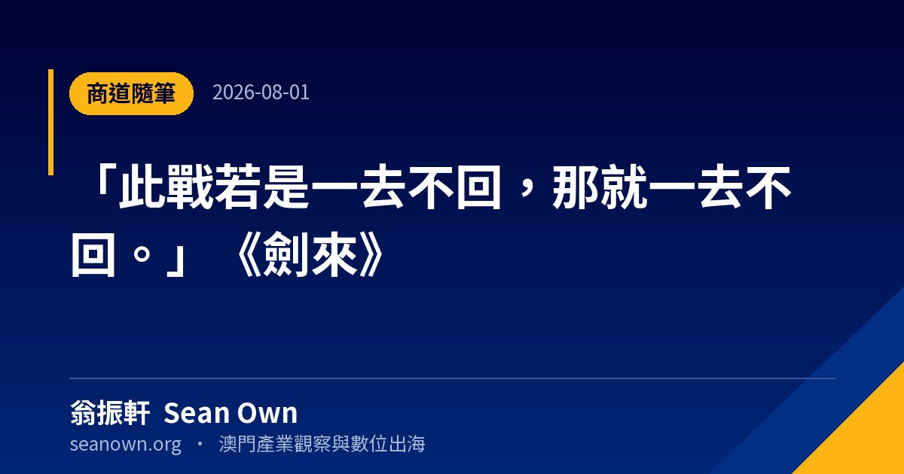
「此戰若是一去不回，那就一去不回。」《劍來》
「此戰若是一去不回，那就一去不回。」《劍來》讀《劍來》，最令人動容的，是北俱蘆洲六十二位劍仙。劍氣長城危在旦夕，眾劍仙明知前…

天下第一山，不在高度，在起點。
天下第一山，不在高度，在起點。井岡山被譽為「天下第一山」，不在山水，而在起點、在初心、在星火燎原的信念。當年微弱的革命星火，…
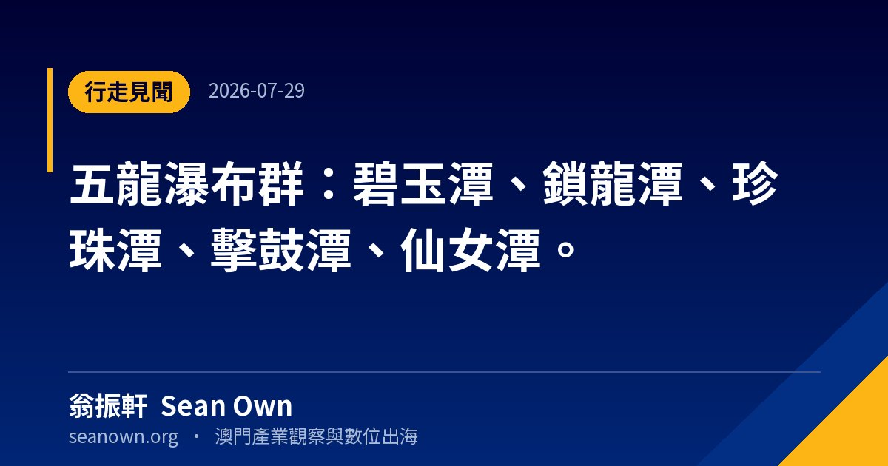
五龍瀑布群：碧玉潭、鎖龍潭、珍珠潭、擊鼓潭、仙女潭。
五龍瀑布群：一共五潭連續：碧玉潭、鎖龍潭、珍珠潭、擊鼓潭、仙女潭。相傳遠古時，羅霄山裡有五位龍女，迷戀井岡山青山翠谷，不願返…
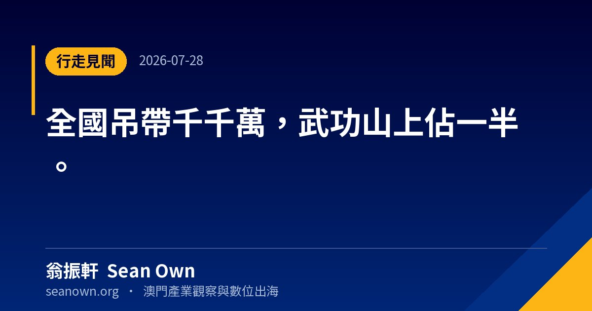
全國吊帶千千萬，武功山上佔一半。
全國吊帶千千萬，武功山上佔一半。三步小短褲，五步一吊帶，年輕人應該爬的第一座山武功山。幸好我問了今日上山的年輕人，一個吊帶都…
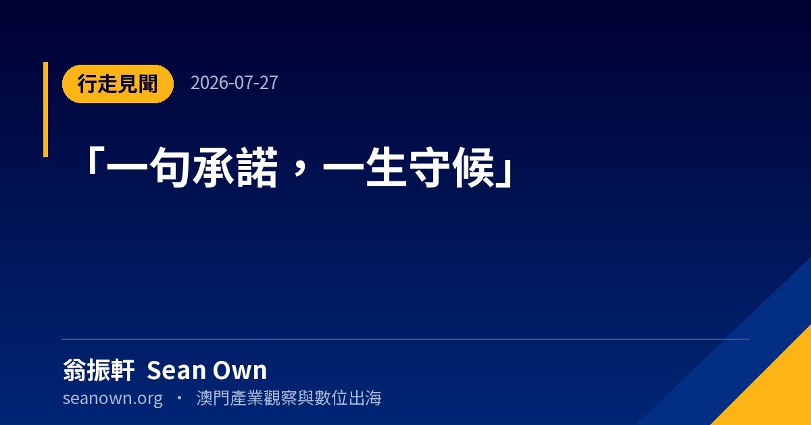
「一句承諾，一生守候」
「一句承諾，一生守候」出席2026贑港澳台青年交流活動，聆聽「一句承諾，一生守候」的動人往事。戰亂年代，多少人離散天涯，一別…
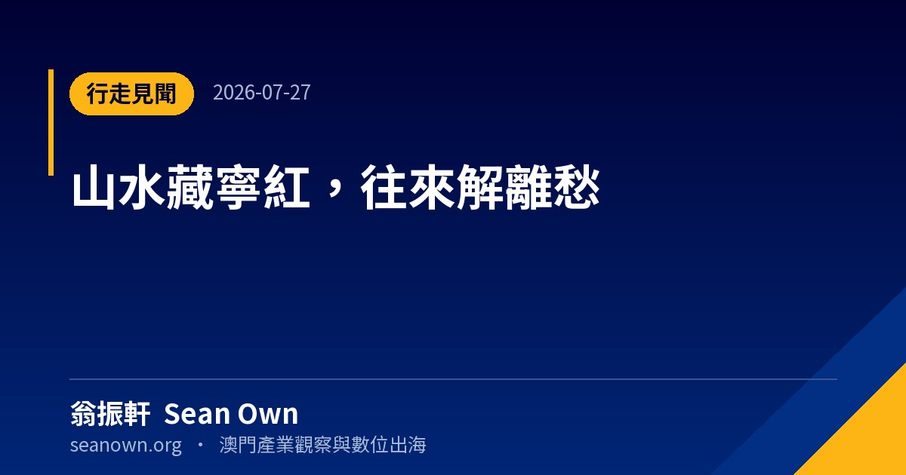
山水藏寧紅，往來解離愁
山水藏寧紅，往來解離愁今日走訪修水，江西面積最大的縣，差不多有130個澳門大。地處內陸，生態原始、水質極佳，泉水出產西港豆腐…
滕王閣夜遊
滕王閣夜遊｜北園正氣亭遇文天祥，感悟天地正氣。漫步贛江邊，觀吉尼斯認證的江景燈光秀。打卡南昌人氣奶茶洪都大拇指。一篇《滕王閣…
天下第一家丨德安義門陳
天下第一家丨德安義門陳走訪九江德安義門陳，號稱「天下第一家」。唐朝公元731年定居，15代族人、332年不分家，鼎盛時全族3…

拜訪凱普集團，一場意料之外的重逢
拜訪凱普集團，一場意料之外的重逢巧遇舊識余小望先生，現任凱普康和醫院行政副院長。凱普生物是HPV領域中國先行者，A股創業板上…

為什麼南京幾個優秀的平台跟企業，正在瞄準汕頭？
為什麼南京幾個優秀的平台跟企業，正在瞄準汕頭？國內僅上海、青島、汕頭擁有合法合規海底光纜出海通道。汕頭擁有全國52%合法合規…

一信載鄉愁：遊歷揭陽、汕頭，探尋先僑足跡
一信載鄉愁：遊歷揭陽、汕頭，探尋先僑足跡夜遊揭陽石獅橋、打銅街，日間走訪汕頭僑批展，感受《給阿嬤的情書》承載僑史。僑批是南洋…
傳說中的ALL MEAT PIZZA
（此篇暫無文字，僅打卡地點：汕頭市 潮德阿水牛肉火鍋非遺老字號。文字待軒哥補）

揭陽實業傳奇｜康夫創始人黃華群
揭陽實業傳奇｜康夫創始人黃華群憑一身潮汕拼勁，締造多個行業第一：吹風機領域唯一「中國馳名商標」、連續十年全國吹風機總銷量冠軍…
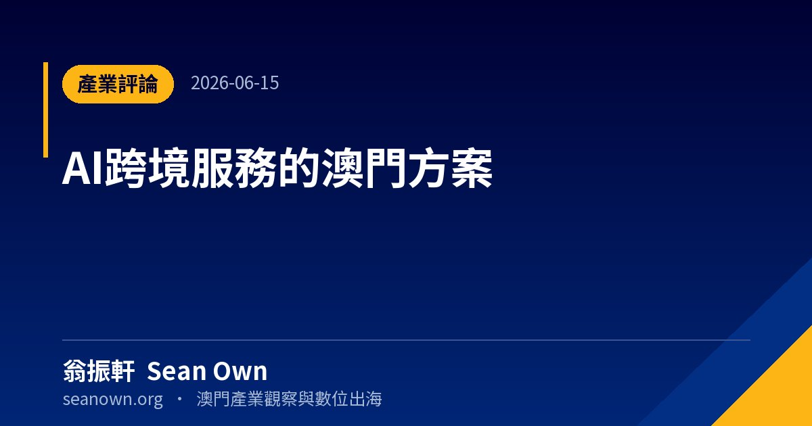
AI跨境服務的澳門方案
核心挑戰中國企業出海面臨的最大痛點不是技術，而是數據跨境合規。各國數據主權法規日益嚴格，傳統單一伺服器架構無法滿足合規要求。…
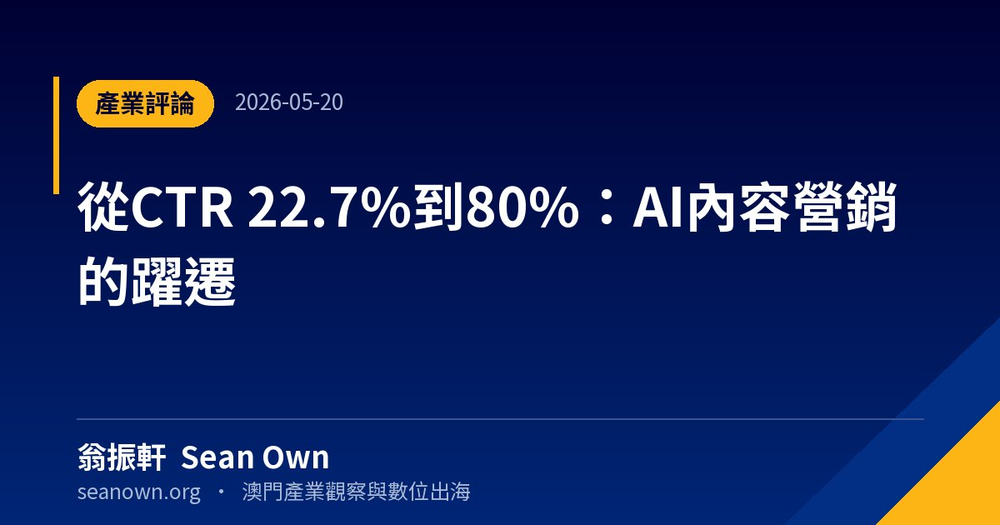
從CTR 22.7%到80%：AI內容營銷的躍遷
傳統內容營銷的瓶頸傳統跨境電商內容製作週期長、成本高、語種覆蓋有限。一個產品上綫8個市場，需要至少8套內容素材，耗時數周。 …
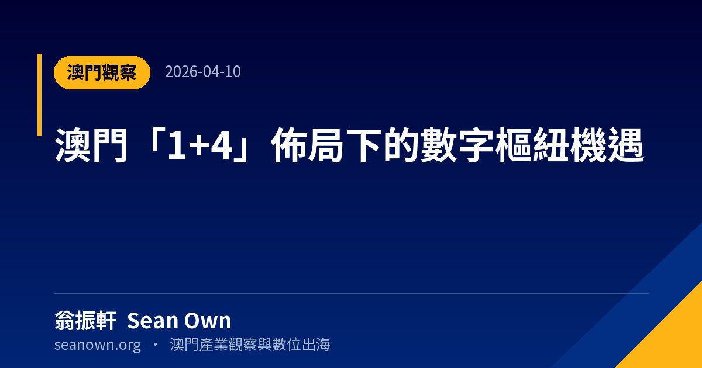
澳門「1+4」佈局下的數字樞紐機遇
「1+4」產業佈局澳門特區政府提出的「1+4」產業適度多元發展策略： 1：世界旅遊休閒中心 4：高新技術產業、現代金融產業、…
中華文化IP的全球化路徑
文化IP的價值中華文化是寶貴資源，但長期以來「有資源、無產業」的問題突出。如何把文化資源轉化為文化資產，再轉化為文化資本，是…
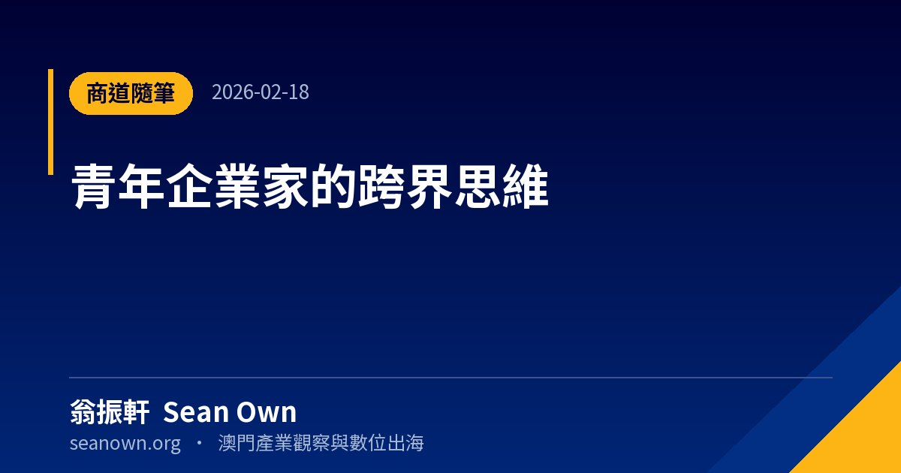
青年企業家的跨界思維
跨界的本質很多人以為跨界是「什麼都做」，其實真正的跨界是底層能力的遷移。無論是食品、科技還是文化，核心能力都是： 資源整合 …
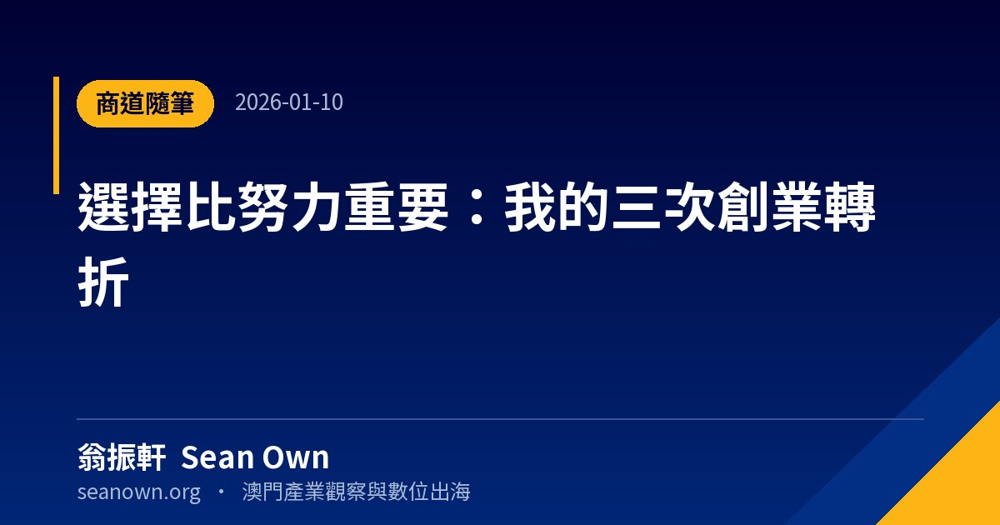
選擇比努力重要：我的三次創業轉折
第一次選擇：回大陸2001年從UC Berkeley畢業，放棄美國的工作機會回大陸。當時很多人不理解，但我看到了中國加入WT…